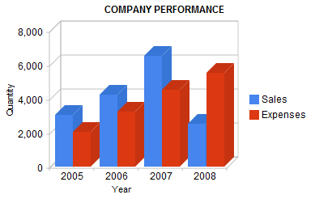
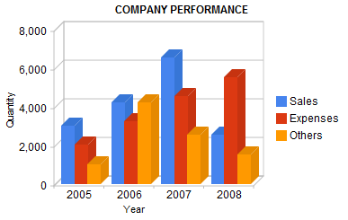
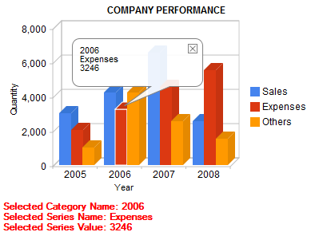

Introduction
A column chart displays a series as a set of vertical bars that are grouped by category. Column charts are useful for showing data changes over a period of time or for illustrating comparisions among items. Column Chart Control is an interactive chart, try clicking on a column or on the legend entries. Examples
The user control is really simple, you just need to set one property in order to get the control working. The Data property. Show a simple column chart to illustrate a comparision between Sales and Expenses for certain years
//Sample code for GoogleCharts  Adding more series to be displayed by the control
&GoogleChartSeries = new()  Handling events
As we mentioned before, Column Chart Control is an interactive chart. That is, when clicking on series legend the corresponding columns will be highlighted. In addition, when clicking on a column, a tooltip will be displayed and also a GeneXus event wil be fired. //GoogleChartsControl event handler Note: &GoogleChartSelectedData is based on GoogleChartSelectedData SDT (this SDT is also automatically imported when dropping the control to a web form.  Implementation DetailsColumn Chart Control is based on the Google Column Chart Control. |
| Backlinks | ||
| Bar Chart | Google Charts | GXGoogle Visualization Library |
| Pie Chart | Scatter Chart |